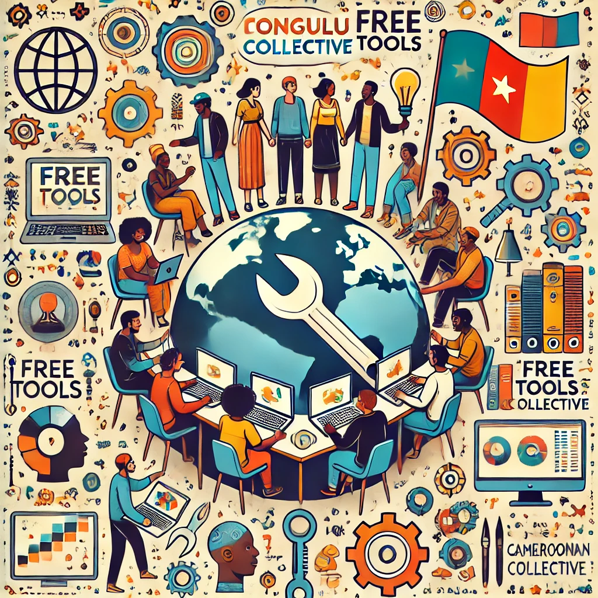

Humility and recognition
We want to build with respect and keep visible the people and histories that digital work too often leaves aside.
Volunteer and open-source collective
We build and support open-source tools shaped by the needs of the Cameroonian community in France, with a clear focus on usefulness, shared knowledge, and collective momentum.

Name and meaning
The collective takes its name from the huts built by the Baka people, often called mongulu. The image matters to us because it evokes a practical shelter filled with tools that serve a community.
Learn more about the Baka people.
Long-term direction
We aim to become a trusted digital actor for the Cameroonian community in France, grounded in open knowledge, practical solidarity, and durable community-led tools.
What guides the work
Our projects are shaped by explicit principles: recognition, empowerment, and a strong commitment to free software as a condition for long-term digital autonomy.
We want to build with respect and keep visible the people and histories that digital work too often leaves aside.
We share useful skills so people can understand tools, grow their practice, and act with more autonomy.
Code should be open to study, adapt, and pass on. That openness is what makes projects durable and truly reusable.
How we work
The collective relies on co-opted members, Cameroonians or close allies, who bring a wide range of digital skills.
A monthly gathering for an afterwork event organized by an external African association.
A monthly experience-sharing presentation by an internal or external member on a chosen topic.
New initiatives
New ideas are discussed collectively and only move forward when they remain realistic, useful, and aligned with the spirit of the collective.
Joining Mongulu means contributing to useful work, learning with others, and helping practical skills circulate.